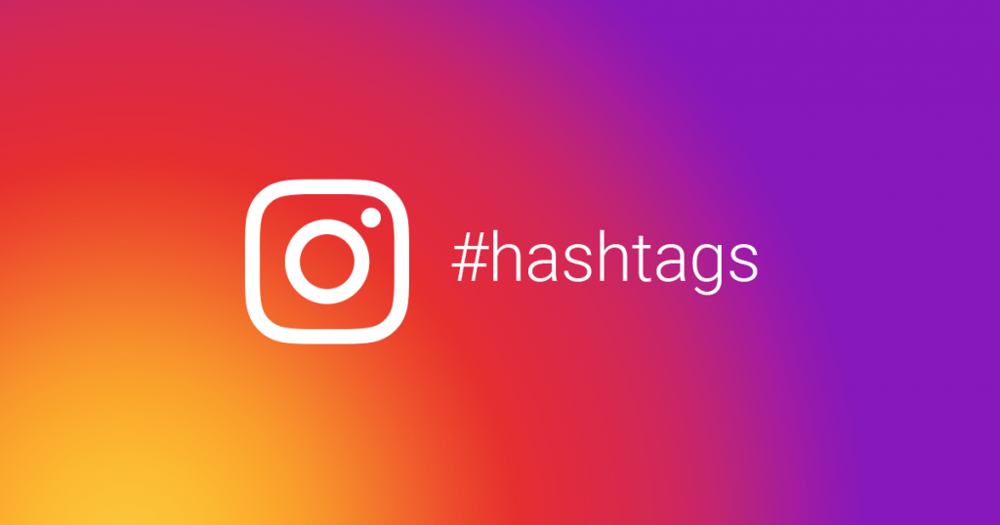
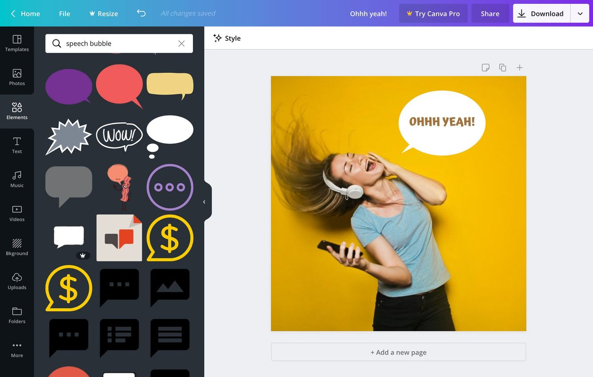
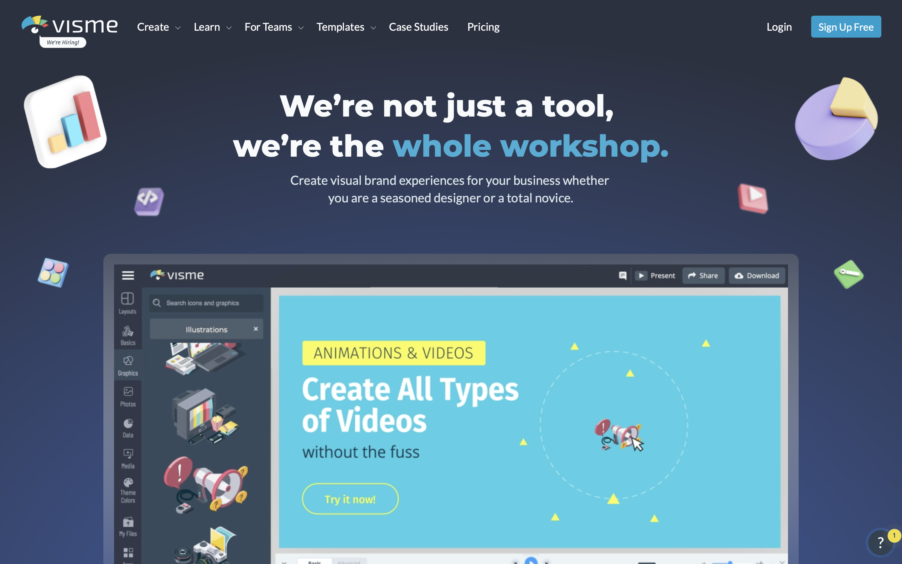

Promote Your Content
1. Promote one message throughout your campaign.
Start by promoting the same message across a various multiple platforms, using content that is appropriate for the platform in mind. By sharing the same message consistently throughout your campaign, your followers will hear the same information over and over again, allowing them to remember your message. Messages are most effective when repeated, according to previous marketing campaigns. Repetition creates familiarity, which builds trust between your audience and your message, brand, and product. Messages that are repeated are remembered.
2 .Ensure your content is unique to your business.
Create an aesthetic for your campaign that is consistent with your brand. You want this to be one-of-a-kind — anyone who lands on your page should be able to tell it's yours without having to read your profile handle. Being unique and authentic helps you stand out... and it also gives people a reason to choose you over your competitors.
3. Engage with your audience regularly.
Regardless of how many followers you have, you should make time to answer questions, "like" comments, and respond to feedback. By taking the time to interact with your followers, you will provide them with a memorable personal experience. These are the kinds of relationships and experiences that keep your brand's followers interested.
4.Create a unique hashtag for your campaign.
Every major social media campaign has a hashtag, which should be consistent across all platforms. Hashtags allow your team to keep track of interactions and make it simple for your followers to participate in your campaign. Your hashtag should be one-of-a-kind and memorable. For example, Lays the crisp company has a popular social media campaign called Do us a flavour. this a prime example of how creative you could get with your own hashtags, instead lays promoting their product with usual simple line of 'Do us a favour' they went out and thought way to lighten that phrase by changing one single word . Chaning favour into flavour is such a minor change yet so effective at the same time Their hashtag for the campaign is #DoUsAFlavor. It’s straightforward, simple to remember, and action-oriented.

5.Create supporting visual content
This is a great place to add a tagline.
One of the best and efficient ways in reaching to your audience by grabbing their attention is through your visual content. Yes, visuals content will help you attract more viewers due to their eye catching graphics that will be very hard to scroll past before viewing it. Examples of visual content are Infographics, Digital posters, web graphics etc.
On social media, visuals boost engagement 2.3 times more than posts without visuals on Facebook and 1.5 times more.
Now it's time to create all of the visual components you planned out in steps 2 and 4.
You don't need a graphic designer to make really fun and engaging images. their hundreds of sites that help beginners make their appealing and creative content with help of tutorials and basic formats, ideas and examples to ensure max level of confidence when coming to make your graphics. Some of them even supply you with already made template for you to only edit and make it your own.
Are personal favourite is Canva for creating quick, easy images with text. It can make you high quality social media content to post on your socials in just a couple of minutes using Canva.
Another good tool is Visme. It's a new graphic design software that allows you to create a personalised image in seconds. It has over 1 million high-quality images in its library and thousands of templates.
 